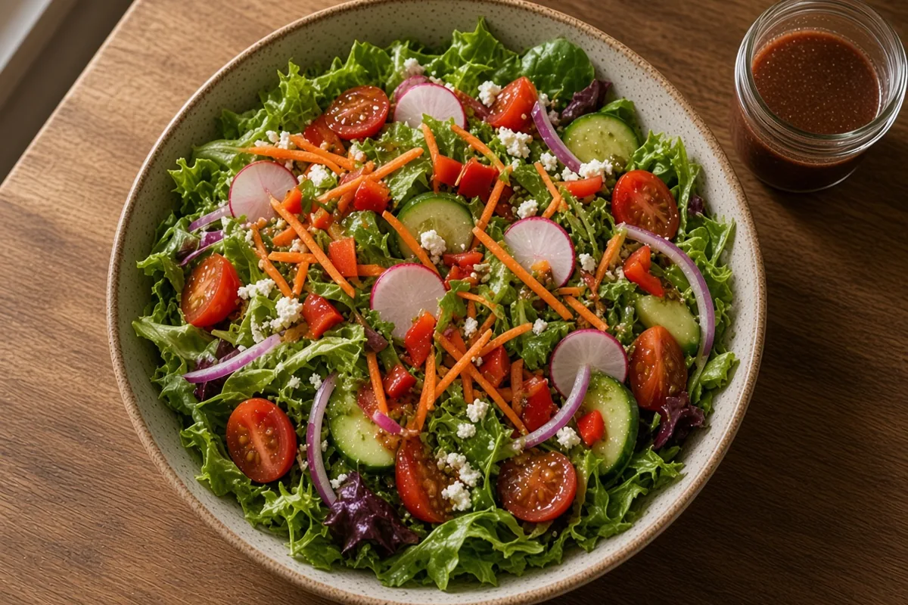

Garden Salad
Crisp mixed greens with cherry tomatoes, cucumber, carrot, radish, bell pepper, and red onion. House red-wine vinaigrette goes on at the table so the leaves stay snappy.

6 servings
By
Yield: 6 servings
Prep:
Cook:
Total:
Ingredients
- 8 cups mixed salad greens (romaine torn with spring mix), washed and spun dry
- 1 pint cherry or grape tomatoes, halved
- 1 English cucumber, halved lengthwise and sliced
- 2 carrots, peeled and shredded or cut into thin coins
- 4 radishes, sliced thin
- 1 small red or green bell pepper, diced
- 1/2 small red onion, sliced thin
- 1/2 cup sweet corn kernels, optional (fresh off the cob or thawed)
- 1 ripe avocado, sliced, optional
- 1/3 cup extra-virgin olive oil
- 3 tablespoons red wine vinegar
- 1 teaspoon Dijon mustard
- 1 teaspoon honey
- 1 small garlic clove, minced
- 1/2 teaspoon dried oregano
- 1/4 teaspoon kosher salt, plus more to taste
- Freshly ground black pepper
Instructions
- Wash the greens and spin them very dry. Wet leaves will not take the vinaigrette. Chill the greens while you cut the vegetables if you have time.
- Halve the tomatoes. Slice the cucumber, radishes, and red onion. Shred or coin the carrots. Dice the pepper. If using corn, drain it well.
- In a jar, combine olive oil, red wine vinegar, Dijon, honey, garlic, oregano, 1/4 teaspoon kosher salt, and several grinds of black pepper. Cap and shake until emulsified. Taste; it should be sharp. Add a pinch of salt or a drop of honey if it needs balance.
- Pile the greens in a wide bowl. Scatter tomatoes, cucumber, carrot, radish, pepper, onion, and optional corn over the top. Leave the avocado off until serving so it does not brown.
- Just before you sit down, add the avocado if using. Shake the vinaigrette again, pour about two-thirds over the salad, and toss with tongs until every leaf is lightly coated. Taste a leaf; add the rest of the dressing and a pinch of salt only if it needs it. Serve immediately.